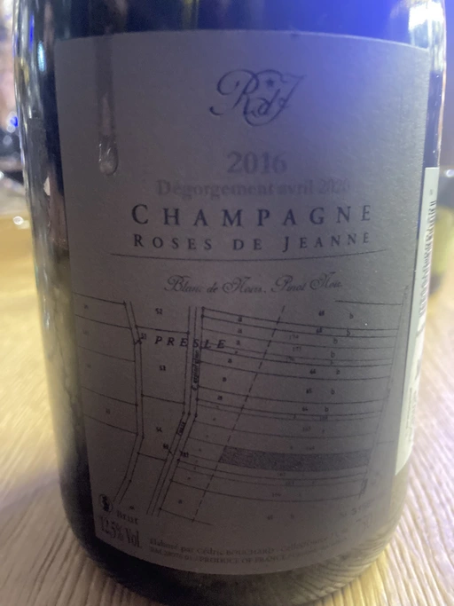
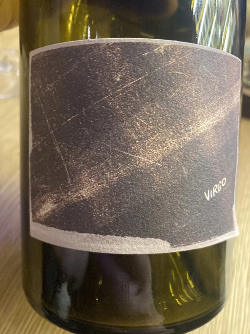
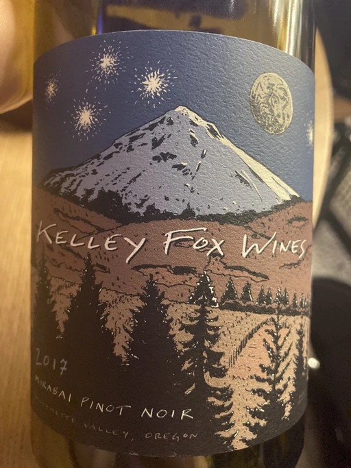
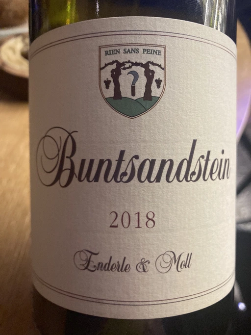
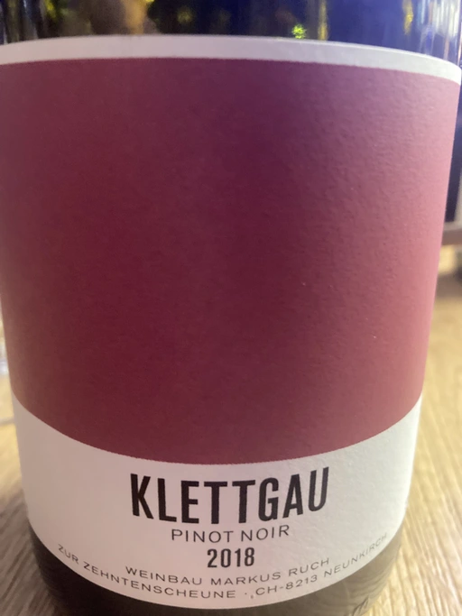

Pinot Noir in Garage

It’s not a secret that Vasyl Kalinichenko loves Pinot Noir. So there is little wonder he organised a blind tasting event dedicated to this grape in Garage. The choice of wine is intriguing. We start with non-mainstream Champagne and white Pinot Noir by Hungarian IT guy. Then we continue with red from Oregon, Germany and Switzerland. Most of us would expect at least one bottle of Burgundy, but no… Special events crave for special wines!
- Roses De Jeanne Presle Millesime BdN 2016
- Bencze Virgo 2019
- Kelley Fox Wines Mirabai Pinot Noir 2017
- Enderle&Moll Buntsandstein 2018
- Weinbau Markus Ruch Klettgau Pinot Noir 2018
It always makes me happy when Champagne praised so highly. Especially when it’s not something mainstream. On the other hand, I was amazed that in terms of favoritism, Pinot Noir from Oregon is sharing first place with Champagne. The white one was received not so well, but no wonder due to the crazy low intervention style.
| Wine #1 | Wine #2 | Wine #3 | Wine #4 | Wine #5 | |
|---|---|---|---|---|---|
| Julia | 4.50 | 4.10 | 3.80 | 3.80 | 3.50 |
| Vlad | 4.30 | 3.50 | 4.00 | 3.80 | 3.40 |
| Elvira | 4.20 | 3.50 | 4.10 | 3.50 | 3.90 |
| Sasha | 3.50 | 3.30 | 3.80 | 3.40 | 3.70 |
| Boris | 4.20 | 3.90 | 4.00 | 3.80 | 4.00 |
| Vasyl | 4.00 | 3.50 | 4.40 | 3.90 | 3.50 |
| total | amean | sdev | favourite | price | QPR | |
|---|---|---|---|---|---|---|
| Wine #1 | 24.70 | 4.12 | 0.0981 | 3.00 | 3300.00 | 0.8683 |
| Wine #2 | 21.80 | 3.63 | 0.0756 | 0.00 | 726.00 | 1.9323 |
| Wine #3 | 24.10 | 4.02 | 0.0414 | 3.00 | 1500.00 | 1.6407 |
| Wine #4 | 22.20 | 3.70 | 0.0333 | 0.00 | 1186.00 | 1.3011 |
| Wine #5 | 22.00 | 3.67 | 0.0489 | 0.00 | 1002.00 | 1.4682 |
How to read this table:
totalis just sum of all scores.ameanis arithmetic mean (and not ‘amen’), calculated as sum of all scores divided by count of scores for particular wine. It is more useful thantotal, because some wines are not tasted by all participants.sdevis standard deviation. The bigger this value the more controversial the wine is, meaning that people have different opinions on this one.favouriteis amount of people who marked this wine as favourite.priceis wine price in UAH.QPRis quality price ratio, calculated in as100 * factorial(rms)/price. The reason behind this totally unprofessional formula is simple. At some point you have to pay more and more to get a little fraction of satisfaction. Factorial used in this formula rewards scores close to the upper bound 120 times more than scores close to the lower bound.
Roses De Jeanne Presle Millesime 2016

- producer: Roses De Jeanne
- name: Presle Millesime
- vintage: 2016
- grapes: Pinot Noir
- degorgee: 2020
- sur lie: 42 months
- location: Champagne AOC, France
- price: 3300 UAH
Great and expressive BdN (100% Pinot Noir). Notes of oxidation, yellow apple, crème brûlée, brioche, cider, baked apple. Wonderful acidity, well balanced and quite delicate on the palate despite being almost full-bodied. Flavourful and long aftertaste with lots of cider in the taste. Opens up in the glass, good to drink in a small company (or alone haha) to enjoy its evolution.
Bencze Virgo 2019

- producer: Bencze
- name: Virgo
- vintage: 2016
- grapes: Pinot Noir
- location: Balatonfelvidék OFJ, Hungary
- price: 726 UAH
I didn’t guess. I literally had no ideas. It turned out to be white Pinot Noir. Crazy reductive bouquet with salty pickles, rotting mandarin and ginger. High tart acidity that beautifully evolves in the mouth. Interesting finish with notes of lemon, mandarin, pickles and wet sea rocks. Not my style, but somehow I enjoyed it. One of this wines that are complex in a bad way - hard to enjoy without putting too much effort into it. Score is mostly for interesting taste.
Kelley Fox Wines Mirabai Pinot Noir 2017

- producer: Kelley Fox Wines
- name: Mirabai Pinot Noir
- vintage: 2017
- grapes: Pinot Noir
- location: Willamette Valley AVA, Oregon, USA
- price: 1500 UAH
This is where my luck returned to me. I guessed that it’s from Oregon. Pale, restrained with pretty classic notes. Cherry, red flowers, pine nuts, and gouache. Crisp, medium-light body with round tannin, long oily aftertaste. Interesting Pinot Noir and my first one from Oregon.
Enderle&Moll Buntsandstein 2018

- producer: Enderle&Moll
- name: Buntsandstein
- vintage: 2018
- grapes: Pinot Noir
- location: Landwein Oberrhein, Germany
- price: 1186 UAH
Again! Luck is on my side! I guessed producer. Since it is my first time tasting this particular wine, I didn’t guess the name (at least guessed that it’s not Liaison). Aromatic bouquet with typical low intervention style notes. Acetone, red flowers, salami, and truffles. While it has a beautiful and complex bouquet, it doesn’t deliver in the taste. Lacks balance, the finish is too bitter, the tannin is too powerful, aftertaste is too short. Could be better with time though.
Weinbau Markus Ruch Klettgau Pinot Noir 2018

- producer: Weinbau Markus Ruch
- name: Klettgau Pinot Noir
- vintage: 2018
- grapes: Pinot Noir
- location: Neunkirch, Switzerland
- price: 1002 UAH
And again, luck is on my side. I guessed country, but not producer. Clean, expressive Pinot Noir with interesting bouquet of raspberry, cherry, violets, earth, graphite and raw meat. Good acidity, medium-high dry tannin. Very young, has potential. Tasty.